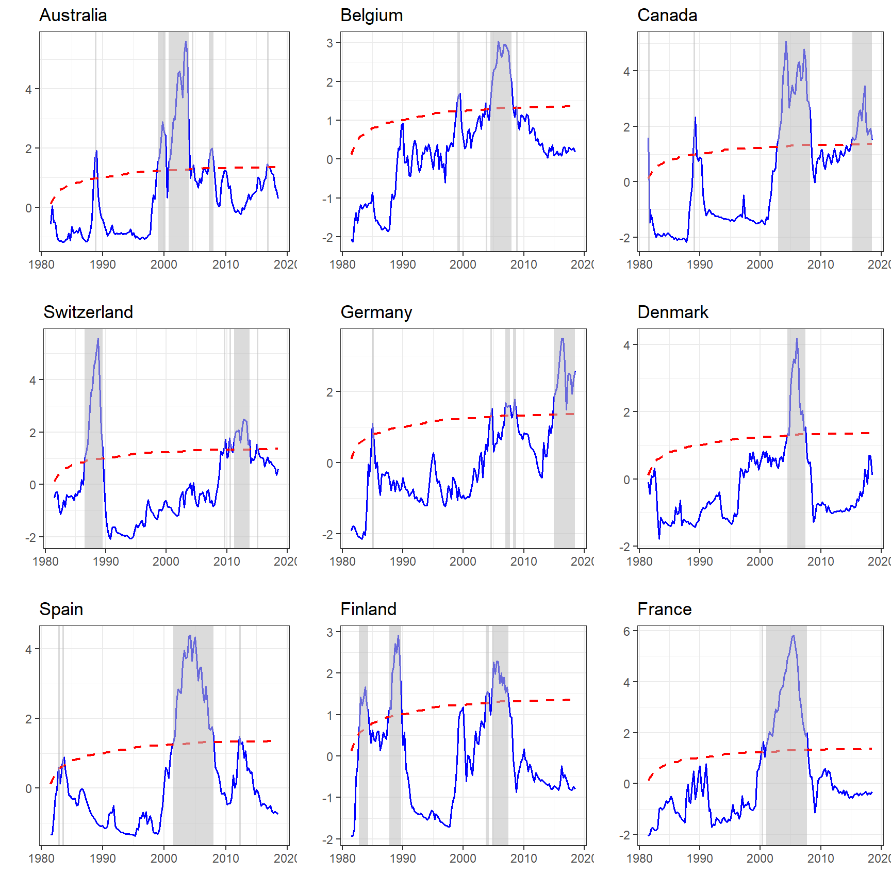

In this exercise
library(dplyr)
#>
#> Attaching package: 'dplyr'
#> The following objects are masked from 'package:stats':
#>
#> filter, lag
#> The following objects are masked from 'package:base':
#>
#> intersect, setdiff, setequal, unionWrangle
There are a couple of is
price <-
rhpi %>%
rename(Date = 1) %>%
mutate(Date = Date %>% lubridate::yq()) %>%
select( -25) %>%
tidyr::drop_na()
price
#> # A tibble: 175 x 25
#> Date Australia Belgium Canada Switzerland Germany Denmark Spain
#> <date> <dbl> <dbl> <dbl> <dbl> <dbl> <dbl> <dbl>
#> 1 1975-01-01 39.1 44.5 59.5 93.7 109. 57.4 89.4
#> 2 1975-04-01 38.5 45.7 59.2 91.7 108. 57.6 96.4
#> 3 1975-07-01 38.6 46.8 60.1 90.3 109. 59.1 94.9
#> 4 1975-10-01 37.7 48.5 59.6 88.8 109. 58.1 98.2
#> 5 1976-01-01 37.9 50.8 59.2 86.7 110. 58.4 96.3
#> 6 1976-04-01 38.1 52.3 60.0 85.8 111. 57.3 103.
#> 7 1976-07-01 38.3 53.7 59.0 84.9 111. 57.3 102.
#> 8 1976-10-01 37.9 55.1 57.8 85.1 113. 58.7 97.1
#> 9 1977-01-01 37.9 56.2 56.0 84.4 114. 57.5 92.9
#> 10 1977-04-01 37.7 57.9 55.4 85.0 115. 59.3 84.2
#> # ... with 165 more rows, and 17 more variables: Finland <dbl>,
#> # France <dbl>, UK <dbl>, Ireland <dbl>, Italy <dbl>, Japan <dbl>, `S.
#> # Korea` <dbl>, Luxembourg <dbl>, Netherlands <dbl>, Norway <dbl>, `New
#> # Zealand` <dbl>, Sweden <dbl>, US <dbl>, `S. Africa` <dbl>,
#> # Croatia <dbl>, Israel <dbl>, Aggregate <dbl>Estimation
glimpse(radf_price)
#> List of 7
#> $ adf : Named num [1:24] 0.274 -0.295 1.134 -1.916 -1.008 ...
#> ..- attr(*, "names")= chr [1:24] "Australia" "Belgium" "Canada" "Switzerland" ...
#> $ badf : num [1:149, 1:24] -0.5781 0.0511 -0.5235 -0.5232 -0.9896 ...
#> ..- attr(*, "dimnames")=List of 2
#> .. ..$ : NULL
#> .. ..$ : chr [1:24] "Australia" "Belgium" "Canada" "Switzerland" ...
#> $ sadf : Named num [1:24] 2.8555 0.8183 2.7077 2.5288 0.0339 ...
#> ..- attr(*, "names")= chr [1:24] "Australia" "Belgium" "Canada" "Switzerland" ...
#> $ bsadf : num [1:149, 1:24] -0.5781 0.0511 -0.5124 -0.5119 -0.9659 ...
#> ..- attr(*, "dimnames")=List of 2
#> .. ..$ : NULL
#> .. ..$ : chr [1:24] "Australia" "Belgium" "Canada" "Switzerland" ...
#> $ gsadf : Named num [1:24] 5.6 3.03 5.07 5.58 3.49 ...
#> ..- attr(*, "names")= chr [1:24] "Australia" "Belgium" "Canada" "Switzerland" ...
#> $ bsadf_panel: num [1:149] -1.09 -1.19 -1.09 -1.08 -1.11 ...
#> $ gsadf_panel: num 2.44
#> - attr(*, "index")= Date[1:175], format: "1975-01-01" "1975-04-01" ...
#> - attr(*, "lag")= num 1
#> - attr(*, "minw")= num 25
#> - attr(*, "col_names")= chr [1:24] "Australia" "Belgium" "Canada" "Switzerland" ...
#> - attr(*, "class")= chr "radf"Report
tibble(
Country = col_names(radf_price),
ADF = radf_price$adf,
SADF = radf_price$sadf,
GSADF = radf_price$gsadf
)
#> # A tibble: 24 x 4
#> Country ADF SADF GSADF
#> <chr> <dbl> <dbl> <dbl>
#> 1 Australia 0.274 2.86 5.60
#> 2 Belgium -0.295 0.818 3.03
#> 3 Canada 1.13 2.71 5.07
#> 4 Switzerland -1.92 2.53 5.58
#> 5 Germany -1.01 0.0339 3.49
#> 6 Denmark -0.893 1.98 4.18
#> 7 Spain -1.59 0.680 4.39
#> 8 Finland -0.968 2.87 2.91
#> 9 France -0.500 3.20 5.82
#> 10 UK -0.641 2.73 4.82
#> # ... with 14 more rowsPanel
summary(radf_price, sb)
#>
#> Recursive Unit Root
#> ----------------------------------
#> H0: Unit root
#> H1: Explosive root
#> ----------------------------------
#> Critical values: Sieve Bootstrap
#> Minimum window: 25
#> Bootstraps: 1000
#> Lag: 1
#> ----------------------------------
#> Panel
#> t-stat 90% 95% 99%
#> GSADF 2.4378 0.1420 0.1587 0.1876Plotting

Alternatively we can gather all the individuals graphs and report only the periods of explosiveness.
radf_price %>%
datestamp(cv = mc_con) %>%
autoplot()
#> Warning: Removed 1 rows containing missing values (geom_segment).